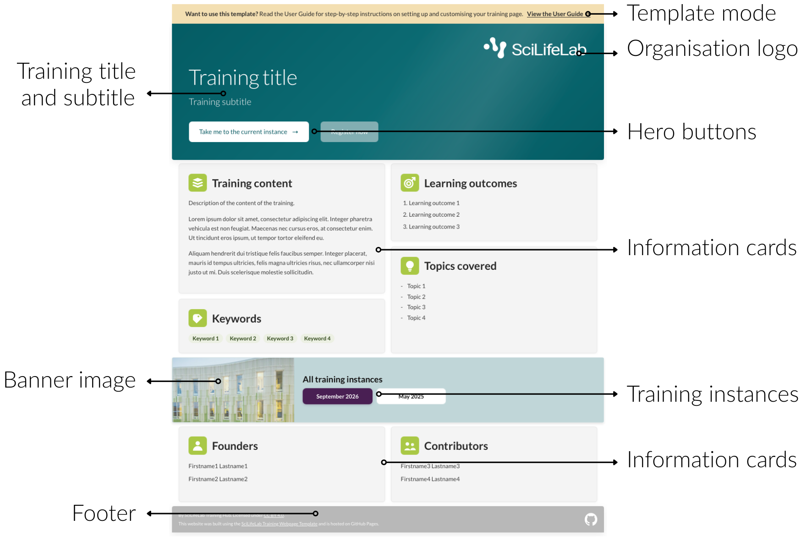
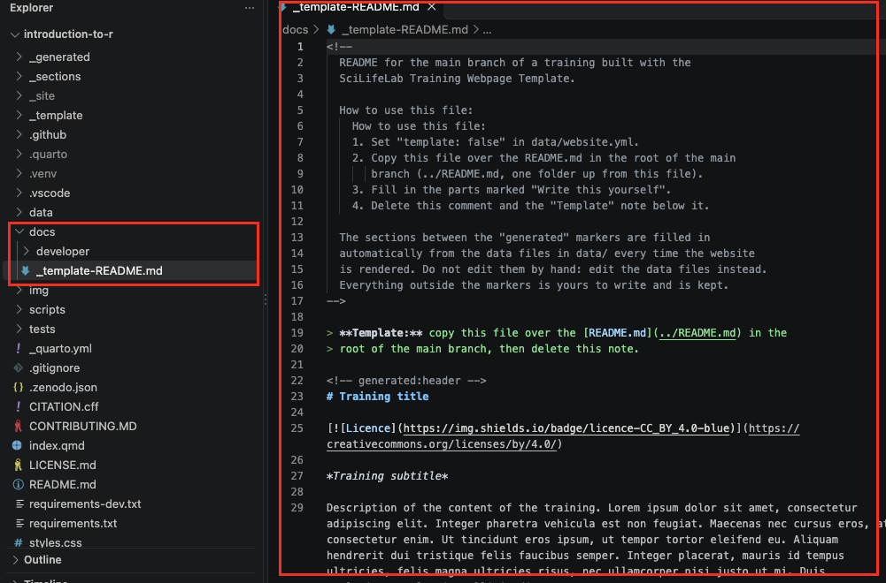
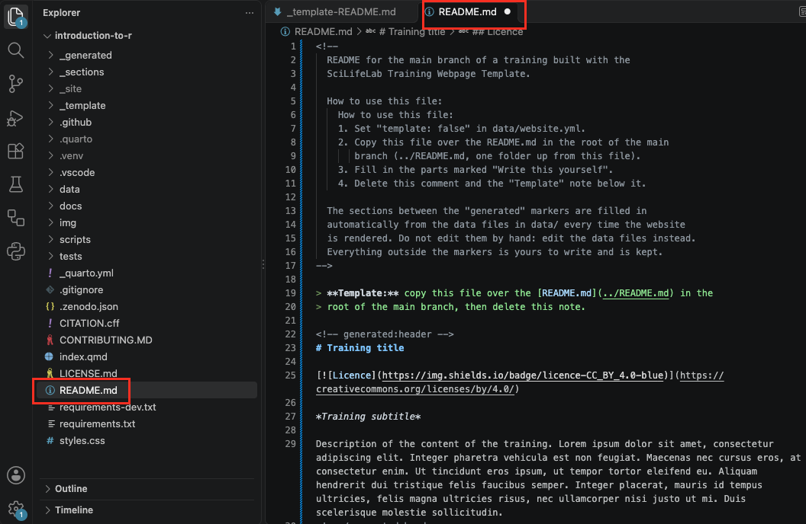
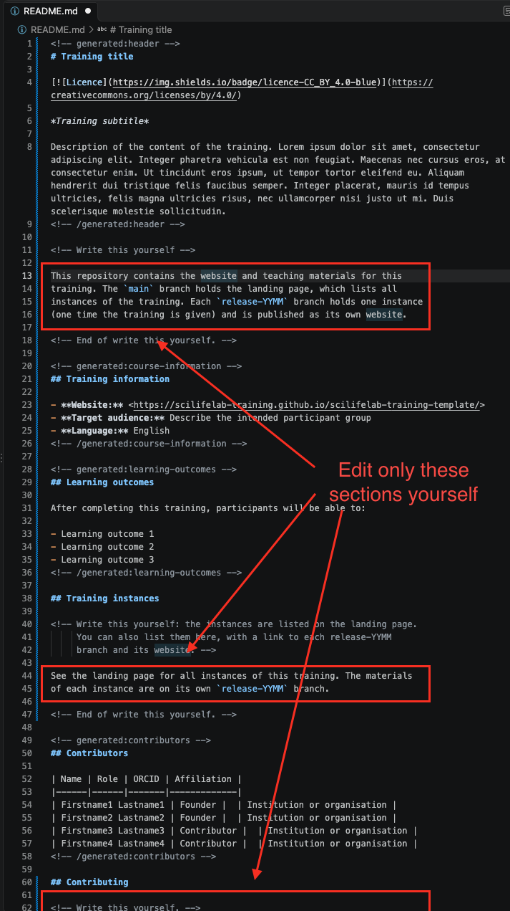

5 Landing page
The landing page is the front door of your training. It introduces the training as a whole, and helps visitors decide whether to register, or which training instance to open.
The figure below shows the parts of the landing page, and the names this guide uses for them.

In this chapter, you will learn how to:
- Switch off template mode: replace the README and remove the template banner.
- Customise the look: the organisation logos, the button texts, and banner image.
- Describe your training: the title, subtitle, information cards, footer, and how others may reuse your training.
How to create a training instance and add it to the landing page is explained in the next chapter, Training instances.
Before you start
Everything in this chapter happens on the main branch, and almost all of it in three data files in the data folder:
| Data file | What it holds |
|---|---|
data/course.yml |
The title, description, learning outcomes, keywords and topics of your training, and the organisation and licence shown in the footer |
data/team.yml |
The people behind the training |
data/website.yml |
Template mode, logos, button texts and banner image |
Not sure how a data file works? See Data files.
Work as described in Regular workflow:
- In a new terminal, start the preview:
python scripts/preview.py- Make your changes, save them, and check the result in your browser.
- Commit and push your changes. You don’t have to do this after every change: you can make several changes, and then commit and push them together.
The cheat sheet at the end of this chapter sums up which file to open and what to change for each part of the landing page.
5.1 Switch off template mode
Your repository starts as a copy of the template, so it still presents itself as the template, in two places:
- the
README.mdfile, the description shown on your repository’s main page on GitHub, which still describes the template instead of your training; - the yellow Want to use this template? banner at the top of the landing page (see the overview image above).
In this section, you replace the README and then switch off template mode, so your repository presents your own training.
Replace the README
The template comes with a ready-made README for your training, in docs/_template-README.md. Copy it over the current README, which describes the template:
In the Explorer panel, open the
docsfolder and then_template-README.md.
Select all text (Cmd+A or Ctrl+A) and copy it.
Open
README.mdin the main folder of your repository, select all text, and paste, so the copied text replaces it.
Delete the note at the top of the file, between
<!--and-->, and the line starting with> **Template:**.Fill in the parts marked Write this yourself. The other parts, between
<!-- generated:... -->lines, are filled in automatically from your data files.Save the file.

5.2 Customise the look
You can make the landing page your own by changing the organisation logos, the button texts and the banner image. All of these are in data/website.yml. Open it, and work through the parts below.
Logos
The logos in the hero show the organisations behind your training. The SciLifeLab logo is always shown on the right. Your other logos appear to its left.
Add a logo
Save your logo as an SVG or PNG file.
TipUse a white version of your logo, or one made for a dark background, so it stands out against the dark hero.
Copy the file into the
img/logosfolder: drag it from your computer onto the folder in the Explorer panel in VS Code.In
data/website.yml, find theheropart:hero: logos: - src: "img/logos/SciLifeLab_Logotype_NEG.png" alt: "SciLifeLab" height: 56 primary: trueAdd your logo below the existing one, with these lines:
src: where the file is:img/logos/followed by the file name;alt: the name of the organisation;height(optional): the height of the logo in pixels, 56 if you leave it out.
For example:
IMAGE
- Save the file, and check the preview. If the logos look like different sizes, adjust their
heightuntil they look about the same.
The logo with primary: true (SciLifeLab) is always shown on the right. Your other logos appear to its left, in the same order as in the list.
Remove a logo
- In
data/website.yml, delete all lines of the logo you want to remove, from- src:to its last line. - Save the file.
- Optional: if you no longer need the logo file, delete it from the
img/logosfolder. In VS Code, right-click the file and choose Delete.
5.3 Describe your training
What the landing page says about your training comes from two data files: data/course.yml describes the training, and data/team.yml the people behind it. The information you enter in these files is also used in the README and the citation of your training, and helps people find it in Zenodo and training registries such as TeSS.
Both files contain explanations at the top and between the fields, in the lines starting with #. This section covers the main points; the explanations in the files give the details.
How to fill in a data file
You only change the values: the text after the colon. See Data files for how a data file is built. Values come in three forms:
A single line of text, between quotation marks:
title: "Introduction to R"Several paragraphs, after |. Start each line with the same number of spaces, and separate paragraphs with an empty line:
description: |
This training introduces R, a free and widely used programming
language for data analysis.
Through short demonstrations and hands-on exercises, you learn how to
read, clean, summarise and plot your data.A list: each line starting with - is one item. To add an item, copy a whole line, paste it below, and change the text. To remove an item, delete its whole line:
keywords:
- "R"
- "Data analysis"
- "Data visualisation"The training: course.yml
Open data/course.yml and work through it from top to bottom:
| Field | Where it appears | What to fill in |
|---|---|---|
title |
The hero, and the browser tab | The name of your training |
subtitle |
The hero, below the title | One sentence about the training (optional) |
description |
The Training content card | What the training covers, in a few paragraphs |
learning_outcomes |
The Learning outcomes card | What participants can do after the training |
keywords |
The Keywords card | Four or five short terms that describe the subject |
topics |
The Topics covered card | The main topics, as short phrases |
language, target_audience, expertise_level, organizers, funding |
Not on the landing page: in the README, the citation and the information for training registries | See the explanations in the file |
licence, licence_url (under reuse) |
The footer (“Licensed under …”), the README and the citation | CC BY 4.0 by default. |
The other fields under reuse can stay empty for now:
doi,release_dateandzenodo_communitiesbelong to publishing your training on Zenodo, and are explained in FAIRification.licence_id,website_urlandpreferred_citationcan stay empty for most trainings. The template works out the address of your website, and creates the citation from your team, title and DOI.
Example of a filled-in course.yml:
IMAGE
- Subtitle: keep it to one sentence, and start it with an action verb such as Learn, Understand, Explore, Build or Apply.
- Learning outcomes describe what participants will be able to do after the training. For guidance, see the SciLifeLab Training Hub resources on writing learning outcomes.
- Optional fields: to leave out the subtitle, use
subtitle: "". To leave out the funding, keepfunding: []. - Licence: if you change it, also replace the text in
LICENSE.mdin the main folder of your repository with the full text of your new licence.
The team: team.yml
The Founders and Contributors cards at the bottom of the landing page list the people in data/team.yml. They are also credited in the README and the citation of your training.
Open data/team.yml and fill in each person. The comments at the top of the file explain every field. To add a person, copy a whole entry, from - given_names: to the line before the next person, paste it below, and change the values. To remove a person, delete their whole entry.
Example of a filled-in team.yml:
IMAGE
Every person needs given_names, family_names, roles (Founder or Contributor) and affiliation. If one is missing, the preview shows an error that names the person and the missing field.
5.4 Cheat sheet
Switch off template mode
| To… | Where | What to do |
|---|---|---|
| Replace the README | README.md |
Replace its contents with docs/_template-README.md, and fill in the parts marked Write this yourself |
| Remove the template banner | data/website.yml |
Set template: false |
Customise the look
| To… | Where | What to do |
|---|---|---|
| Add a logo | img/logos/ and data/website.yml |
Copy the file into the img folder, and add src, alt and height lines under hero: → logos: |
| Change the size of a logo | data/website.yml |
height of the logo, in pixels |
| Remove a logo | data/website.yml |
Delete all lines of the logo |
| Change the button texts | data/website.yml |
hero_view_current_label and hero_registration_open_label under labels |
| Change the heading of the banner | data/website.yml |
instances_band_title under labels |
| Change the banner image | img/images/ and data/website.yml |
Copy the image into the img folder, and change image under instances_band |
| Show no banner image | data/website.yml |
Set image: "" under instances_band |
Describe your training
| To… | Where | What to do |
|---|---|---|
| Change the title and subtitle | data/course.yml |
title and subtitle |
| Change the training content | data/course.yml |
The text under description |
| Change the learning outcomes, keywords or topics | data/course.yml |
The lists under learning_outcomes, keywords and topics |
| Leave out the subtitle or funding | data/course.yml |
Set subtitle: "" or funding: [] |
| Change the organisation in the footer | data/course.yml |
organizers |
| Change the licence | data/course.yml |
licence and licence_url under reuse. Also replace LICENSE.md |
| Add or change founders and contributors | data/team.yml |
Add or edit a person, with roles set to Founder or Contributor |